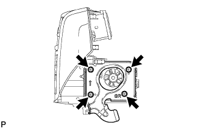
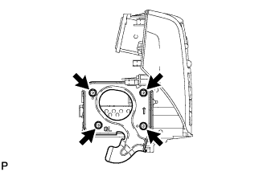
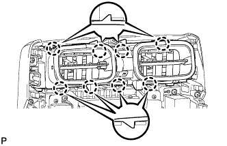

ДИСПЛЕЙ С СИСТЕМОЙ НАВИГАЦИИ В СБОРЕ > СНЯТИЕ |
| 1. ОТСОЕДИНИТЕ ПРОВОД ОТ ОТРИЦАТЕЛЬНОГО ВЫВОДА АККУМУЛЯТОРНОЙ БАТАРЕИ |
| 2. СНИМИТЕ ИНТЕГРИРОВАННУЮ ПАНЕЛЬ УПРАВЛЕНИЯ В СБОРЕ |
 |
Освободите 4 фиксатора.
Отсоедините разъем и снимите интегрированную панель управления в сборе.
| 3. СНИМИТЕ ДИСПЛЕЙ МОДУЛЯ СИСТЕМЫ НАВИГАЦИИ И ИНДИКАЦИИ |
 |
Выверните 4 болта.
 |
Потяните дисплей модуля системы навигации и индикации, чтобы освободить 8 фиксаторов с обратной стороны дисплея.
Отсоедините разъемы и снимите дисплей модуля системы навигации и индикации.
| 4. СНИМИТЕ КРОНШТЕЙН РАДИОПРИЕМНИКА № 1 |
|  |
Выверните 4 болта и снимите кронштейн радиоприемника № 1.
| 5. СНИМИТЕ КРОНШТЕЙН РАДИОПРИЕМНИКА № 2 |
|  |
Выверните 4 болта и снимите кронштейн радиоприемника № 2.
| 6. СНИМИТЕ ЦЕНТРАЛЬНЫЙ РЕГУЛЯТОР ТЕМПЕРАТУРЫ ВОЗДУХА В САЛОНЕ С ПАНЕЛИ ПРИБОРОВ В СБОРЕ |
|  |
Освободите 6 захватов и снимите центральный воздуховод с дефлектором панели приборов.